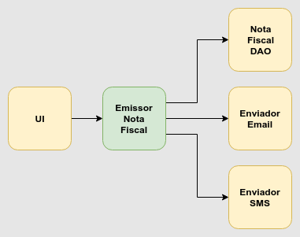
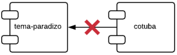
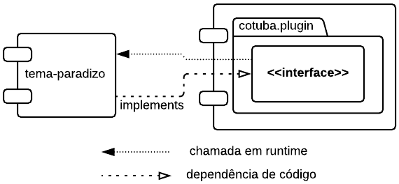

SOLID com Java
Alexandre Aquiles
Instrutor e Desenvolvedor na Caelum
- Twitter: @alex_aquiles
- Linkedin: linkedin.com/in/alexandreaquiles
- GitHub: github.com/alexandreaquiles
- Blog: alexandreaquiles.com.br
- Livro: Controlando Versões com Git e GitHub
Pra que serve OO?
- Modelagem
- Dependências
Modelagem
A importância de um domain model
- Feature-Driven Development
- Domain-Driven Design
- Card-Responsibility-Collaboration (CRC)
Dependências
A importância de dependências bem gerenciadas
- Design Patterns
- Dependency Injection
- GRASP
- SOLID
Parte 1
public class Empregado {
public BigDecimal calculaPagamento() { ... }
public BigDecimal calculaTaxas() { ... }
public void cadastraHoras(List<Hora> horas) { ... }
public void salva() { ... }
public static Empregado buscaPorId(Long id) { ... }
public String convertePraXML() { ... }
public void leXML(String xml) { ... }
}
Muitas responsabilidades
- calcular pagamento e taxas (Financeiro)
- cadastrar horas (RH)
- salvar e buscar por id (Persistência)
- converter e ler de/para XML (Integração)
Muitas responsabilidades == muitas razões para mudar
- mudança na regra de cálculo das taxas
- mudança nas regras de horas extra
- mudança nos índices ou nomes de colunas da tabela do BD
- mudança de SAX pra StAX ou no Schema do XML
Coesão
co·e·são
sf
- FÍS Força de atração entre as partículas ou moléculas de um corpo.
- FIG Coerência de pensamento ou de um todo.
- Associação íntima entre pessoas que integram um grupo.
ETIMOLOGIA: lat cohæsĭo.
Single Responsibility Principle
SOLID
"Uma classe deve ter apenas um motivo para ser mudada"
Uncle Bob, no livro "Agile Principles, Patterns, and Practices in C#" (2006)
DEMO
Classes coesas
- menores e mais simples de entender
- menos bugs por classe
- mais fáceis de reutilizar
Prestar atenção aos imports nos oferece pistas de problemas no gerenciamento de dependências do nosso código.
... começar de um código estruturado, modificando-o em pequenos passos, até chegar a um código extensível e com as responsabilidades bem definidas, é uma boa maneira de ver a verdadeira utilidade de OO. E de aprender!
Alexandre Aquiles (eu), no post "Refatorar é bom para aprender OO" (2010)
MVC
Molde pré-estabelecido de distribuição de responsabilidades
- View: só telas e interação com o usuário
- Controller: meio-de-campo
- Model: o resto todo
Problema comum de Coesão
Controller fazendo coisas demais:
- busca dados do BD
- faz regra de negócio
- envia email
- chama WebService
- manda resultado para a View
Deveria apenas pegar resultados de outras classes e enviar para a View. E vice-versa.
Como encontrar classes que não são coesas?
Procure por classes que:
- possuem muitos métodos diferentes
- são modificadas com frequência
- não param nunca de crescer
Não ache que você conseguirá escrever classes coesas o tempo todo, e de primeira.
Escrever código de qualidade é sempre incremental; você modela, observa seu modelo, aprende com ele e o melhora.
GRASP
General Responsibility Assignment Software Principles
Princípios criados por Craig Larman que documentam soluções comuns para atribuição de responsabilidades a objetos.
Craig Larman, no livro "Applying UML and Patterns", 3rd Ed. (2004)
GRASP
- High cohesion
- Low coupling
- Indirection
- Polymorphism: use polimorfismo ao invés de if's para o que varia.
- Protected variations: esconda o que varia atrás de uma interface comum.
- Information Expert: atribua uma responsabilidade à classe que tem a maior quantidade de informação para cumpri-la
- Controller: um "ponto de entrada" do sistema além da UI que recebe "eventos". Representa um "caso de uso" no código.
- Creator: encapsula a criação de outros objetos.
- Pure fabrication: classe que não existe no domínio de negócio mas promove baixo acoplamento e alta coesão
RDD
Responsibility Driven Design
Pense em objetos como pessoas com responsabilidades que colaboram com outras pessoas para fazer coisas. RDD enxerga projeto OO como uma comunidade de objetos colaborativos e responsáveis.
Rebecca Wirfs-Brock citada por Craig Larman no livro "Applying UML and Patterns", 3rd Ed. (2004)
CRC
Class-Responsibility-Collaborator
CRC é um técnica criada por Kent Beck e Ward Cunningham pra exploração das classes de um sistema e suas respectivas responsabilidades
- Encontre as classes
- Descreva as responsabilidades
- Defina os colaboradores, para as responsabilidades que a classe precisa de informações de outras classes
CRC

Duplicação
Dependência é o principal problema em desenvolvimento de software. Duplicação é o sintoma.
Mas, ao contrário da maioria dos problemas na vida, nos quais eliminar os sintomas faz com que um problema mais grave apareça em outro lugar, eliminar duplicação nos programas elimina dependência.
D.R.Y.
Don't Repeat Yourself
Todo bloco de conhecimento deve ter uma representação única, sem ambiguidades e dominante num sistema.
Andrew Hunt e Dave Thomas, no livro "The Pragmatic Programmer" (1999)
Regras do Design Simples
- Roda todos os testes
- Não contém nenhuma duplicação
- Expressa as ideias com clareza
- Minimiza o número de classes e métodos
Kent Beck, citado por Ron Jeffries no post "Essential XP: Emergent Design" (2001)
J. B. Rainsberger, no post "Putting An Age-Old Battle To Rest" (2013)
Parte 2
Dependências
(ou acoplamento)
- Web (UI) é um detalhe
- BD (DAO) é um detalhe
- Email é um detalhe
- SMS é um detalhe
Os Mecanismos de Entrega mudam...
As Regras de Negócio continuam!
O problema é Regras de Negócio dependeram de Mecanismos de Entrega (detalhes)
Uma mudança em qualquer um dos Mecanismos de Entrega levará a uma mudança no código de Negócio
Volátil
vo·lá·til
adj m+f
- Que voa, que tem a capacidade de voar; voador, voante.
- FIG Pouco firme; inconstante, mudável, volúvel.
- FÍS-QUÍM Que pode se reduzir a gás ou a vapor, sob temperaturas e pressões normais.
- FIG Que não tem matéria ou substância; impalpável.
ETIMOLOGIA: lat volatĭlis.
Implementações são voláteis
Abstrações são (mais) estáveis
Dependency Inversion Principle
SOLID
"Dependa de abstrações, não de implementações"
Uncle Bob, no artigo "Design Principles and Design Patterns" (2000)
Já li isso antes...
Programe voltado à interface, não à implementação
Gamma & Helm & Johnson & Vlissides, no livro "Design Patterns" (1995)
Dependency Inversion Principle
SOLID
"Módulos de alto nível não devem depender de módulos de baixo nível. Ambos devem depender de abstrações."
"Abstrações não devem depender de detalhes. Detalhes devem depender de abstrações."
Uncle Bob, no livro "Agile Principles, Patterns, and Practices in C#" (2006)
Alto Nível == Regras de Negócio
Baixo Nível == Mecanismos de Entrega
public class EmissorNotaFiscal {
private final List<AcaoPosEmissao> acoes;
public EmissorNotaFiscal(List<AcaoPosEmissao> acoes) {
this.acoes = acoes;
}
public void emite(Fatura fatura) {
NotaFiscal nota = //...
for (AcaoPosEmissao acao : acoes) {
acao.executa(nota);
}
}
}
DEMO
Um dos lugares mais comuns que os projetos dependem de classes concretas é quando esses projetos criam instâncias.
Uncle Bob, no artigo "Design Principles and Design Patterns" (2000)
Design Pattern
Factory Method (adaptado)
Moldes de Modelagem
Os design patterns do mundo do software, cuja ideia originou-se da arquitetura de prédios, são uma coleção de soluções comuns para problemas recorrentes. Não são normas de planos, nem moldes de planos. Também não são normas de modelagem. Design patterns são moldes de modelagem.
Alexandre Aquiles (eu), no post "Moldes de Modelagem" (2014)
Interfaces de Serviço, em geral, são do cliente (quem as usa).
Uncle Bob, no livro "Agile Principles, Patterns, and Practices in C#" (2006)
Acoplamento Bom
String muda muito pouco.
É uma classe concreta mas é estável.
Será que temos que usar abstrações para qualquer dependência?
interface RepositorioDeProdutos {
List<Produto> todos();
void salva(Produto p);
}
class ProdutoDao implements RepositorioDeProdutos {
//usa o JPA/Hibernate...
}
Essa interface em particular nos seria bastante útil se tivéssemos a necessidade de mudar a maneira de acesso a dados.
DAOs em particular são classes naturalmente estáveis, com interfaces geralmente bastante claras.
O principal aqui é lembrar de separar infraestrutura do resto [...]
Devemos balancear entre módulos estáveis, em que não queremos mexer nunca, pois eles são importantes e muitas outras classes dependem deles, e módulos mais instáveis, que dependem dos estáveis, mas que vez ou outra precisam sofrer alterações.
Se você está programando alguma classe qualquer com regras de negócio, e precisa depender de outro módulo, ideal- mente esse outro módulo deve ser uma abstração.
A Regra da Dependência
Dependências devem apontar apenas para dentro, em direção às regras de negócio.
Uncle Bob, na palestra "Why can't anyone get Web architecture right?" (2011)
Parte 3
public class CalculadoraDePagamento {
public float calcula(double horas,
double valorHora,
boolean pj) {
if (horas < 0 || horas > 80) {
throw new RuntimeException("Horas excedidas: " + horas);
}
float pagamento = 0;
if (horas > 40) {
float horaExtra = horas - 40;
if (!pj) {
pagamento += (horaExtra * 1.5) * valorHora;
} else {
pagamento += horaExtra * valorHora;
}
horas -= horaExtra;
}
pagamento += horas * valorHora;
return pagamento;
}
}
Polimorfismo
Objetos têm um mecanismo fabuloso, mensagens polimórficas, que permitem expressar lógica condicional de maneira flexível mas clara. Ao trocar condicionais explícitos por mensagens polimórficas, muitas vezes você consegue reduzir duplicação, tornar seu código mais claro e aumentar a flexibilidade tudo ao mesmo tempo.
public abstract class CalculadoraDePagamento {
public float calcula(double horas,
double valorHora) {
validaHoras(horas);
return determinaPagamento(horas, valorHora);
}
private void validaHoras(horas) {
if (horas < 0 || horas > 80) {
throw new RuntimeException("Horas excedidas: " + horas);
}
}
public abstract double determinaPagamento(double horas,
double valorHora);
}
Alexandre Aquiles (eu), no post "Refatorar é bom para aprender OO" (2010)
public class CalculadoraPJ extends CalculadoraDePagamento {
@Override
public double determinaPagamento(double horas,
double valorHora) {
return horas * valorHora;
}
}
public class CalculadoraCLT extends CalculadoraDePagamento {
@Override
public double determinaPagamento(double horas,
double valorHora) {
double horaExtra = Math.max(0, horas - 40);
return horas * valorHora + horaExtra * valorHora * 0.5;
}
}
Alexandre Aquiles (eu), no post "Refatorar é bom para aprender OO" (2010)
Variações protegidas
Identifique pontos previstos de variação e crie uma interface estável em torno deles.
Módulos devem ser abertos (para extensão e adaptação) e fechados (para evitar modificação e afetar clientes).
Bertrand Meyer, no livro "Object-Oriented Software Construction" (1988)
Open/Closed Principle
SOLID
"Deve ser possível estender o comportamento de uma classe sem modificá-la."
Devemos escrever módulos que podem ser estendidos sem que sejam modificados.
Mudar o que os módulos fazem ser mudar o seu código fonte.
Uncle Bob, no artigo "Design Principles and Design Patterns" (2000)
DEMO
Design Pattern
Strategy
Strategy
Encapsular uma família de algoritmos intercambiáveis em objetos com um contrato comum
Alexandre Aquiles (eu), no post "Evitando duplicação com Strategy e Classes Anônimas" (2014)
O Open/Closed Principle é o objetivo de uma arquitetura Orientada a Objetos.
O Dependency Inversion Principle é o seu mecanismo fundamental.
Uncle Bob, no artigo "Design Principles and Design Patterns" (2000)
Encontrar os pontos onde sua modelagem precisa ser flexível e onde não precisa é um desafio.
Anti-IF Campaign
Evite os perigosos IFs e use Objetos para construir código flexível, facilmente modificável e testável e que vai ajudar a evitar muitas dores de cabeça e fins de semana debugando!
DEMO: evitando ifs
Parte 4
Plugins
Aplicação não pode depender de Plugin
- Quais os nomes das classes?
- Quais as assinaturas dos métodos?
Alexandre Aquiles (eu), no post "Plugins em Java com Service Providers" (2018)
Inversão de Dependência
Alexandre Aquiles (eu), no post "Plugins em Java com Service Providers" (2018)
DEMO
interface Imposto {
NotaFiscal geraNota();
double imposto(double valorCheio);
}
Imposto com nota
class ISS implements Imposto {
public double imposto(double valorCheio) {
return 0.1 * valorCheio;
}
public NotaFiscal geraNota() {
return new NotaFiscal(...);
}
}
Imposto sem nota
class IXMX implements Imposto {
public double imposto(double valorCheio) {
return 0.2 * valorCheio;
}
public NotaFiscal geraNota() {
throw new NaoGeraNotaException();
//ou return null;
}
}
Interface Segregation Principle
SOLID
"Clientes não devem ser obrigados a depender de métodos que eles não usam."
Uncle Bob, no livro "Agile Principles, Patterns, and Practices in C#" (2006)
"Muitas interfaces específicas para cada cliente são melhores que uma interface de propósito geral"
Uncle Bob, no artigo "Design Principles and Design Patterns" (2000)
interface CalculadorDeImposto {
double imposto(double valorCheio);
}
interface GeradorDeNota {
NotaFiscal geraNota();
}
DEMO
Interfaces coesas são aquelas cujos comportamentos são simples e bem definidos.
[...]
Classes que dependem de interfaces leves sofrem menos com mudanças em outros pontos do sistema.
Clientes separados, interfaces separadas.
Uncle Bob, no livro "Agile Principles, Patterns, and Practices in C#" (2006)
public class Matricula {
//usados pelo relatório de matrícula
public String getNome() { ... }
public LocalDate getData() { ... }
//usados pelo financeiro
public Boleto preparaBoleto() { ... }
public void confirmaPagamento(Pagamento pagamento) { ... }
}
Baseado no livro de Uncle Bob, "UML for Java Programmers" (2003)
interface MatriculaParaRelatorio {
String getNome();
LocalDate getData();
}
interface MatriculaParaFinancas {
Boleto preparaBoleto();
void confirmaPagamento(Pagamento pagamento);
}
public class Matricula implements MatriculaParaRelatorio,
MatriculaParaFinancas {
//...
}
Baseado no livro de Uncle Bob, "UML for Java Programmers" (2003)
public class NotaFiscal {
public NotaFiscal(
Cliente cliente,
List<Item> itens,
List<Desconto> descontos,
Endereco entrega,
Endereco cobranca,
FormaDePagamento pagto,
double valorTotal
) { ...}
// muitos atributos e métodos
}
class CalculadorDeImposto {
public double calcula(NotaFiscal nf) {
double total = 0;
for(Item item : nf.getItens()) {
if(item.getValor()>1000)
total+= item.getValor() * 0.02;
else
total+= item.getValor() * 0.01;
}
return total;
}
}
interface Tributavel {
List<tItem> itensASeremTributados();
}
class NotaFiscal implements Tributavel {
public NotaFiscal(...) { ... }
public List<Item> itensASeremTributados() { ... }
}
class CalculadorDeImposto {
public double calcula(Tributavel t) {
double total = 0;
for(Item item : t.itensASeremTributados()) {
if(item.getValor()>1000)
total+= item.getValor() * 0.02;
else
total+= item.getValor() * 0.01;
}
return total;
}
}
Se você tiver uma classe que tenha vários clientes, em vez de carregar a classe com todos os métodos de que os clientes precisam, crie interfaces específicas para cada cliente e herde-os na classe.
Uncle Bob, no artigo "Design Principles and Design Patterns" (2000)
Parte 5
DEMO
Inveja de Funcionalidades (ou dados)
A essência dos objetos é que eles são uma técnica para empacotar dados com os processos usados nesses dados.
Um indício clássico de problema é um método que parece mais interessado em uma classe diferente daquela na qual ele se encontra.
O foco mais comum da inveja são os dados.
Encapsulamento
Perceber se um código está bem encapsulado ou não, não é tão difícil. [...] se pergunte:
- O que esse método faz? Provavelmente sua resposta será: eu sei o que o método faz pelo nome dele [...]
- Como ele faz isso? Sua resposta provavelmente é: se eu olhar só para esse código, não dá para responder.
Tell, Don't Ask
Envie comandos para objetos dizendo o que você quer fazer.
Explicitamente, não queremos consultar um objeto sobre seu estado, tomar uma decisão e, então, dizer ao objeto o que fazer.
Andy Hunt e Dave Thomas, no artigo "The Art of Enbugging" (2003)
Código procedural tende a obter informações e, em seguida, tomar decisões baseadas nessas informações.
Código OO diz a objetos que façam coisas.
A Lei de Demetra afirma que todo método de um objeto deve chamar apenas métodos pertencentes a:
- si mesmo
- quaisquer parâmetros que foram passados para o método
- quaisquer objetos criados
- qualquer composição
Andy Hunt e Dave Thomas, no artigo "The Art of Enbugging" (2003)
Escrever código tímido é apenas um pequeno começo para evitar a introdução de bugs, mas realmente ajuda.
Assim como no mundo real, boas cercas fazem bons vizinhos - contanto que você não olhe pela cerca.
Andy Hunt e Dave Thomas, no artigo "The Art of Enbugging" (2003)
DEMO
Design Pattern
Iterator
OO == Herança ???
Se um gato possuiraçaepatas, e um cachorro possuiraça,patasetipoDoPelo, logoCachorro extends Gato?
Pode parecer engraçado, mas é [...] herança por preguiça, por comodismo, por que vai dar uma ajudinha.
A relação “é um” não se encaixa aqui, e vai nos gerar problemas.
Paulo Silveira, no post "Como não aprender orientação a objetos: Herança" (2006)
DEMO
Intimidade Inadequada
Às vezes as classes se tornam íntimas demais e gastam tempo demais sondando as partes privadas das outras.
Podemos não ser pudicos quando o assunto são pessoas, mas achamos que nossas classes devem seguir regras puritanas rígidas.
A herança pode muitas vezes levar à intimidade excessiva. Subclasses sempre saberão mais sobre seus pais do que esses gostariam que elas soubessem.
Como a herança expõe uma subclasse a detalhes da implementação de sua superclasse, costuma-se dizer que "a herança quebra o encapsulamento".
Gamma & Helm & Johnson & Vlissides, no livro "Design Patterns" (1995)
package java.util.Properties;
//...
public class Properties
extends Hashtable<Object,Object> {
//...
}
ComoPropertiesherda deHashtable, os métodosputeputAllpodem ser aplicados a um objetoProperties.
Seu uso é fortemente desencorajado, pois permitem que sejam inseridas entradas cujas chaves ou valores não sãoStrings.
public class OiServlet extends HttpServlet {
public void init(ServletConfig config)
throws ServletException {
super.init(config); //se NÃO chamar, dá pau...
}
protected void service(HttpServletRequest req,
HttpServletResponse res)
throws IOException,
ServletException {
super.service(req, res); //se chamar, dá pau...
}
}
Sendo assim, em alguns casos você deve, e em outros não deve chamar o super, e você só vai saber disso quando conhecer o código fonte
de sua classe pai HttpServlet (ou ler a documentação sobre esse comportamento estranho),
quebrando o princípio de encapsulamento.
Paulo Silveira, no post "Como não aprender orientação a objetos: Herança" (2006)
DEMO
Substituibilidade
Se para cada objetoo1do tipoShá um objetoo2do tipoTque para todos os programasPdefinidos em termos deT, o comportamento dePnão é modificado quandoo1é substituído poro2, entãoSé um subtipo deT.
Barbara Liskov, no artigo “Data Abstraction and Hierarchy” (1988)

Liskov Substitution Principle
SOLID
"Subtipos devem ser substituíveis por seus tipos base."
Uncle Bob, no livro "Agile Principles, Patterns, and Practices in C#" (2006)

- Item 14: Prefira composição a herança
- Item 15: Modele pensando em herança ou proíba-a
- Item 16: Prefira interfaces a classes abstratas
DEMO
Parte 6
(extra)
Componentes (ou módulos)
- Unidade de implantação e gerenciamento
- Unidade de composição e teste
- Unidade de reuso intraprocesso

Kirk Knoernschild, no livro "Java Application Architecture: Modularity Patterns" (2012)
Componente (ou módulo) == JAR
O melhor candidato à unidade de modularidade na plataforma Java é um arquivo JAR!
Kirk Knoernschild, no livro "Java Application Architecture: Modularity Patterns" (2012)
Pacotes
Componentes (ou módulos)
Nesse contexto, um pacote é um entregável binário como um arquivo.jarou umdll, em oposição a umpackageJava ou umnamespaceC++.
Porque componentizar / modularizar?
- Reuso
- Composição
- Gerenciamento das dependências
- Desenvolvimento independente
Uma aplicação nem sempre tem apenas um JAR
Como componentizar / modularizar ?
Princípios de Coesão de Componentes
- Release Reuse Equivalency Principle: A granularidade de reuso é a granularidade de entrega.
- Common Closure Principle: Classes que são modificadas juntas devem estar no mesmo componente.
- Common Reuse Principle: Classes que são usadas juntas devem estar no mesmo componente.
Princípios de Acoplamento de Componentes
- Acyclic Dependencies Principle: O grafo de dependências de componentes não deve ter ciclos.
- Stable Dependencies Principle: Dependa na direção da estabilidade.
- Stable Abstractions Principle: Abstração traz estabilidade.
Arquitetura de Plugins
Usando interfaces, invertemos as dependências para que todos dependam do domain model, que não depende de ninguém.
As dependências sempre apontam na direção das regras de negócio, nunca ao contrário.
Cada mecanismo de entrega seria um plugin diferente.
Alexandre Aquiles (eu), no post "Simplificando Service Providers com módulos do Java 9+" (2018)
Alexandre Aquiles (eu), no post "Simplificando Service Providers com módulos do Java 9+" (2018)
DEMO
JPMS
( Java Platform Module System )
Encapsulamento para módulos no Java 9+
Mais info na minha palestra no WorkJava 2018

Não pule para microsserviços só porque parece legal.
Segregue o sistema em JARs usando uma arquitetura de plug-ins primeiro.
Se isso não for suficiente, considere a introdução de service boundaries em pontos estratégicos.